Computer-Aided Yoga

Introduction
In my final semester of college, I had already completed all my course requirements, so I had the opportunity to enroll in some fun classes. I enrolled in Startitical Learning, Natural Language Processing, Advanced Regression Analysis, and Introduction to Yoga. Can you choose the item that doesn’t belong in this list? If you chose Yoga, you’re technically correct, however, I decided to merge my knowledge of Machine Learning and love for Yoga for my final project to creatively represent what Yoga means to me.
The Plan
In this post, I am going to show how I developed a program that can detect and classify yoga poses from recorded or a live video stream! I took pre-recorded videos of my instructor Zoe Mantarakis and trained a model to identify yoga poses in a live video feed based on the angles of her body.
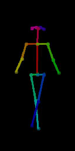
The Motivation
In class we learned the 8 limbs of yoga. I believe the process of creating this project as well as what it can be used for firmly reflect the 8 limbs of yoga, which I will expand on below:
-
First: Yama (moral discipline). The world of coding at large heavily relies on pre-made resources and tutorials. Full transparency, I heavily relied on an online tutorial and Zoe’s content in order to make this a reality. To respect the Yamas, I have ensured to cite the sources that inspired my code chunks, as well as only use these resources when I absolutely could not figure out what to do.
-
Second: Niyama (self-discipline). One limb of Yoga I particularly resonated with was the Niyamas- the positive duties of an individual. There are 5 Niymas: “keep it clean”, “contentment”, “willingness to do hard work”, “consult an expert”, and “trust the universe”. In this project, I showed my willingness to do hardwork and keep it clean by fully implementing a realtively complex algorithm that I have never worked with before. In various steps throughout this project, I had to consult experts on the internet for giudance. In coding projects, it is very easy to keep going, but I had to practice contentment with my final product and stop once I completed my initial task.
-
Third: Asana (Poses). This project heavily relies on the yoga poses. Through studying the poses we learned and quantifying various angles of the body in my reference videos, I developed an intimate understanding of a few of the postures involved in yoga.
-
Fourth: Pranayama (Breath). A key element of yoga is focusing on the connection between the breath, mind, and body. This project helps users develop confidence around the poses they are performing such that they can focus on breathing through poses, not just physically achieveing them.
-
Fifth: Pratyahara (Withdrawing the senses). As I mentioned before, this was my first time completing a computer vision project. When I noticed I began feeling overwhelmed with the various tasks at hand, I took a step back to look at my surroudings. I found that it was incredibly stressful to code in public settings with lots of noise and movement while mutlitasking- it severly impacted my productivity consciously and subconsciously. I adapted and tried to respect the 5th limb by using noise cancelling headphones, ensuring I maintained my focus ont he project and not my surroundings, and coding very early in the morning so I could eliminate distractions.
-
Sixth: Dharana (Concentration). Even when I eliminated external distractions, I still could not fully concentrate on coding as there were several mental distractions that were competing for my attention. To help increase my mental concentration, I set a timer every 30 minutes to take a quick break- a technique that is scientifically proven to increase concentration.
-
Seventh: Dhyana (Meditation). Several psychology academics reference a “flow state” which is defined as a state of mind in which a person becomes fully immersed in an activity. I can honestly say that approaching this project as a yogi allowed me to reach a flow state much faster than if I was just approaching it as a programmer. There were times when I was completly focused on this project and had to skip my concentration breaks to not break the flow state I was in.
-
Eighth: Samadhi (Enlightenment). In no way can I claim that this project helped me reach enlightenment at any point, however, in the process of getting into a flow state and working on a project that I care deeply about, I definitely felt like my optimal self.
I hope you enjoy this post, and as always… namaste.
Build our Model
# import libraries
import cv2
import math
import mediapipe as mp
import numpy as np
import time as time
import matplotlib.pyplot as plt
Initialize the Pose Detection Model
# initialize the pose detection model
mp_pose = mp.solutions.pose
# setup pose function
pose = mp_pose.Pose(static_image_mode=True, \
min_detection_confidence=0.3, \
model_complexity=2)
# initialize mediapipe draw class to annotate body edges and verticies
mp_drawing = mp.solutions.drawing_utils
Read in an Image
# read an image from our data folder
sample_img = cv2.imread('data/triangle.png')
# resize the picture
plt.figure(figsize = [10, 10])
# display the sample
plt.title("Sample Image")
plt.axis("off")
plt.imshow(sample_img[:,:,::-1])
plt.show()
INFO: Created TensorFlow Lite XNNPACK delegate for CPU.
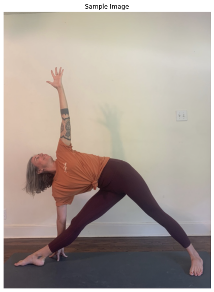
Detect Pose
Now that we know we can pull images from our data folder and display them, we need to find out the body joint locations. In order to quantify what exactly a pose like “downward dog” is, we need to locate each joint in the body of a training image and find the angles between these joints. Then, we can use these references in order to classify new images or live video!
First let’s try to vizualize landmarks in 2 dimentions (static images).
# detect pose after covnerting image color (pose.process() takes RGB not BGR)
results = pose.process(cv2.cvtColor(sample_img, cv2.COLOR_BGR2RGB))
# create a copy of the sample image that we can draw on
img_copy = sample_img.copy()
# check for landmarks
if results.pose_landmarks:
# draw pose landmarks on image
mp_drawing.draw_landmarks(image=img_copy, \
landmark_list=results.pose_landmarks, \
connections=mp_pose.POSE_CONNECTIONS)
# resize image
fig = plt.figure(figsize = [10, 10])
# display the image WITH the annotations also convert back to RGB
plt.title("Output")
plt.axis("off")
plt.imshow(img_copy[:,:,::-1])
plt.show()
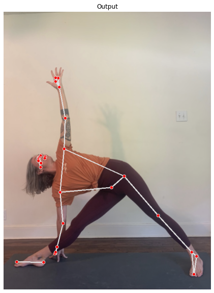
Now let’s try to vizualize landmarks in 3 dimentions (transform the points into 3D).
# plot pose landmarks in 3D
mp_drawing.plot_landmarks(results.pose_world_landmarks, \
mp_pose.POSE_CONNECTIONS)
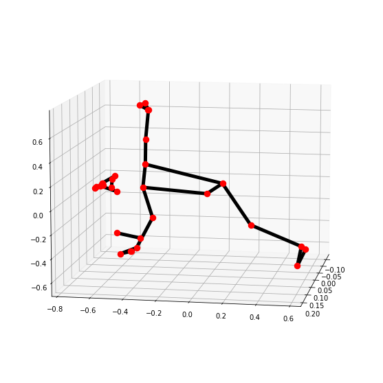
Create a Pose Detection Fucntion
def detectPose(image, pose, display=True):
# create a copy fo the input image
output_image = image.copy()
# convert the image from BGR to RGB
imageRGB = cv2.cvtColor(image, cv2.COLOR_BGR2RGB)
# perform the pose detection
results = pose.process(imageRGB)
# get the height and width of the original image
height, width, _ = image.shape
# initialize a list to store the detected landmarks
landmarks = []
# check if we detected any landmarks
if results.pose_landmarks:
# Draw Pose landmarks on the output image
mp_drawing.draw_landmarks(image=output_image, \
landmark_list = results.pose_landmarks, \
connections=mp_pose.POSE_CONNECTIONS)
# iterate through all detected landmarks
for landmark in results.pose_landmarks.landmark:
# Append the landmark into the list
landmarks.append((int(landmark.x * width), \
int(landmark.y * height), \
(landmark.z * width)))
# if display parameter is = True
if display:
# display the original input image AND annotated image
plt.figure(figsize=[22,22])
## Original Image
plt.subplot(121)
plt.imshow(image[:,:,::-1])
plt.title("Original Image")
plt.axis("off")
## Annotated Image
plt.subplot(122)
plt.imshow(output_image[:,:,::-1])
plt.title("Original Image")
plt.axis("off")
## plot the pose landmarks in 3D (optional)
mp_drawing.plot_landmarks(results.pose_world_landmarks, \
mp_pose.POSE_CONNECTIONS)
# if display parameter is = False
else:
# return only the output image and landmarks
return output_image, landmarks
Let’s test it out…
# seated forward fold
image = cv2.imread('data/standing_forward_fold.png')
detectPose(image, pose, display=True)
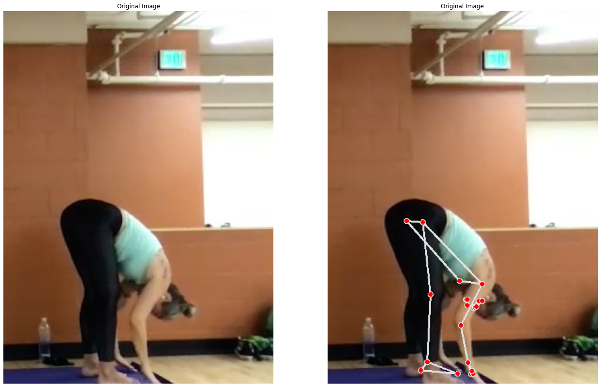
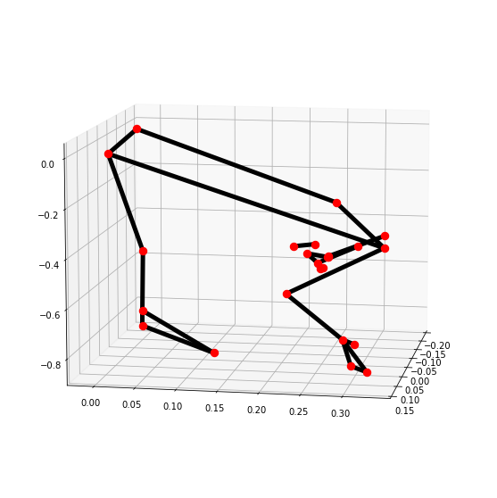
# seated forward fold
image = cv2.imread('data/happy_baby.png')
detectPose(image, pose, display=True)
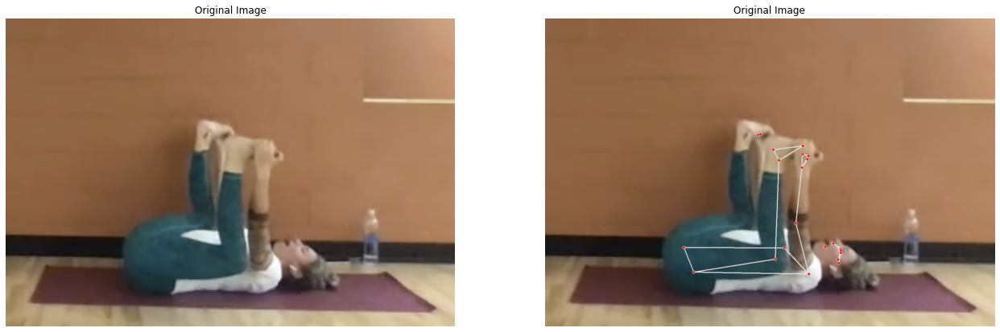
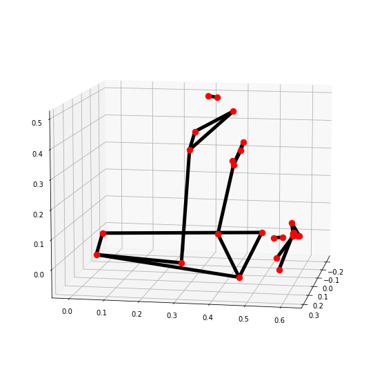
# mountain pose
image = cv2.imread('data/mountain_pose.png')
detectPose(image, pose, display=True)
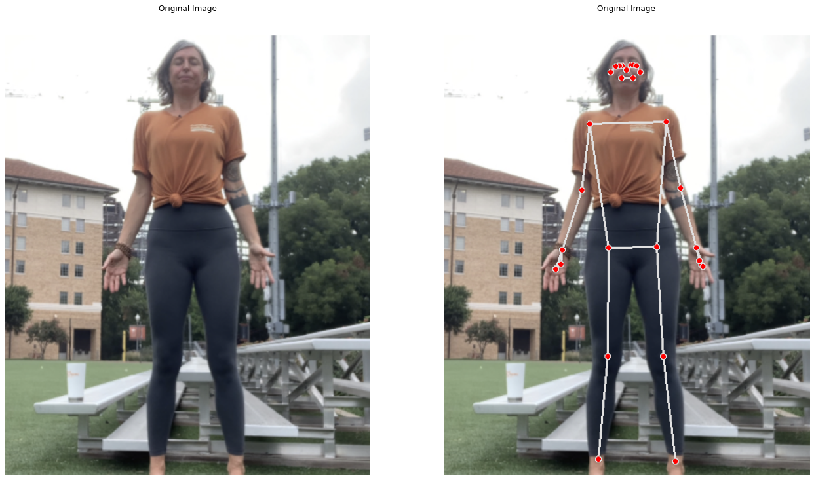
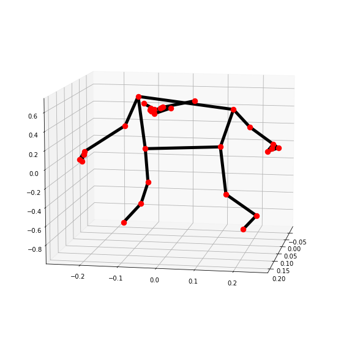
Now lets try to find pose landmarks on real-time video
'''# create pose function for video
pose_video = mp_pose.Pose(static_image_mode=False, \
min_detection_confidence=0.5, \
model_complexity=1)
# initialize VideoCapture so we can read from the webcam
#video = cv2.VideoCapture(0)
# alternatively, you can use a video stored locally
# initialize VideoCapture so we can read from the disk
video = cv2.VideoCapture('data/downward_dog.mp4') # create named window
# initialize a vairable to store prior frame time
time1 = 0
# iterate intul we access the video
while video.isOpened():
# read 1 frame
ok, frame = video.read()
# check if frame is not read properly
if not ok:
break
# Flip frame hoizontally for natural vizulaization
frame = cv2.flip(frame, 1)
# Get the width and height of frame
frame_height, frame_width, _ = frame.shape
# resize the frame, but keep aspect ratio
frame = cv2.resize(frame, \
(int(frame_width*(640 / frame_height)), \
640))
# pose landmark detection
frame, _ = detectPose(frame, pose_video, display=False)
# Make sure we get the correct FPS
time2 = time.time()
if (time2 - time1) > 0:
frames_per_second = 1.0 / (time2 - time1)
cv2.putText(frame, 'FPS: {}'.format(int(frames_per_second)), \
(10,30), cv2.FONT_HERSHEY_PLAIN, 2, (0, 225, 0), 3)
time1 = time2
# display the frame
cv2.imshow('Pose Detection', frame)
k = cv2.waitKey(1) & 0xFF
if (k == 27):
break
video.release()
cv2.destroyAllWindows()'''
"# create pose function for video\npose_video = mp_pose.Pose(static_image_mode=False, min_detection_confidence=0.5, model_complexity=1)\n\n# initialize VideoCapture so we can read from the webcam\n#video = cv2.VideoCapture(0)\n\n# alternatively, you can use a video stored locally\n# initialize VideoCapture so we can read from the disk\nvideo = cv2.VideoCapture('data/downward_dog.mp4') # create named window\n\n# initialize a vairable to store prior frame time\ntime1 = 0\n\n# iterate intul we access the video \nwhile video.isOpened():\n \n # read 1 frame\n ok, frame = video.read()\n \n # check if frame is not read properly\n if not ok:\n \n break\n \n # Flip frame hoizontally for natural vizulaization \n frame = cv2.flip(frame, 1)\n \n # Get the width and height of frame\n frame_height, frame_width, _ = frame.shape\n \n # resize the frame, but keep aspect ratio\n frame = cv2.resize(frame, (int(frame_width*(640 / frame_height)), 640))\n \n # pose landmark detection\n frame, _ = detectPose(frame, pose_video, display=False)\n \n # Make sure we get the correct FPS\n time2 = time.time()\n if (time2 - time1) > 0:\n frames_per_second = 1.0 / (time2 - time1)\n cv2.putText(frame, 'FPS: {}'.format(int(frames_per_second)), (10,30), cv2.FONT_HERSHEY_PLAIN, 2, (0, 225, 0), 3)\n time1 = time2\n \n # display the frame \n cv2.imshow('Pose Detection', frame)\n \n k = cv2.waitKey(1) & 0xFF\n \n if (k == 27):\n break \n \n \nvideo.release()\ncv2.destroyAllWindows()"
Pose Classification using Angles
Now that we can detect where certain body joints are, we need to build some yoga pose classifiers based on the body angles in various joints.
Create function to calculate the angle between land
def calculateAngle(landmark1, landmark2, landmark3):
# get the landmark coordinates
x1, y1, _ = landmark1
x2, y2, _ = landmark2
x3, y3, _ = landmark3
# calculate the angle
angle = math.degrees(math.atan2(y3-y2, x3-x2) - math.atan2(y1-y2, x1-x2))
# check if angle is less than zero
if angle < 0:
# add 360 deg to found angle
angle += 360
# return calculated angle
return angle
Create a function to perform pose classification
In the next part of this video, we will create classifiers for the following poses covered in class:
- Warrior II
- Mountain Pose
- Triangle
- Tree
- Downward Dog
def classifyPose(landmarks, output_image, display=False):
label = "Unknown Pose"
color = (0, 0, 255)
#################################
# calculate the required angles #
#################################
# angle between left shoulder, elbow, and wrist
left_elbow_angle = calculateAngle(landmarks[mp_pose.PoseLandmark.LEFT_SHOULDER.value], \
landmarks[mp_pose.PoseLandmark.LEFT_ELBOW.value], \
landmarks[mp_pose.PoseLandmark.LEFT_WRIST.value])
# Get the angle between the right shoulder, elbow and wrist points.
right_elbow_angle = calculateAngle(landmarks[mp_pose.PoseLandmark.RIGHT_SHOULDER.value], \
landmarks[mp_pose.PoseLandmark.RIGHT_ELBOW.value], \
landmarks[mp_pose.PoseLandmark.RIGHT_WRIST.value])
# Get the angle between the left elbow, shoulder and hip points.
left_shoulder_angle = calculateAngle(landmarks[mp_pose.PoseLandmark.LEFT_ELBOW.value], \
landmarks[mp_pose.PoseLandmark.LEFT_SHOULDER.value], \
landmarks[mp_pose.PoseLandmark.LEFT_HIP.value])
# Get the angle between the right hip, shoulder and elbow points.
right_shoulder_angle = calculateAngle(landmarks[mp_pose.PoseLandmark.RIGHT_HIP.value], \
landmarks[mp_pose.PoseLandmark.RIGHT_SHOULDER.value], \
landmarks[mp_pose.PoseLandmark.RIGHT_ELBOW.value])
# Get the angle between the left hip, knee and ankle points.
left_knee_angle = calculateAngle(landmarks[mp_pose.PoseLandmark.LEFT_HIP.value], \
landmarks[mp_pose.PoseLandmark.LEFT_KNEE.value], \
landmarks[mp_pose.PoseLandmark.LEFT_ANKLE.value])
# Get the angle between the right hip, knee and ankle points
right_knee_angle = calculateAngle(landmarks[mp_pose.PoseLandmark.RIGHT_HIP.value], \
landmarks[mp_pose.PoseLandmark.RIGHT_KNEE.value], \
landmarks[mp_pose.PoseLandmark.RIGHT_ANKLE.value])
# Get the angle between the right shoulder, hip, and knee points
right_hip_angle = calculateAngle(landmarks[mp_pose.PoseLandmark.RIGHT_SHOULDER.value], \
landmarks[mp_pose.PoseLandmark.RIGHT_HIP.value], \
landmarks[mp_pose.PoseLandmark.RIGHT_KNEE.value])
# Get the angle between the left shoulder, hip, and knee points
left_hip_angle = calculateAngle(landmarks[mp_pose.PoseLandmark.LEFT_SHOULDER.value], \
landmarks[mp_pose.PoseLandmark.LEFT_HIP.value], \
landmarks[mp_pose.PoseLandmark.LEFT_KNEE.value])
###################
# check for poses #
###################
# Mountain Pose ----------------------------------------------------------------------------------------------------------------
# straight arms:
if left_elbow_angle > 130 and left_elbow_angle < 195 and right_elbow_angle > 130 and right_elbow_angle < 195:
# arms by side
if left_shoulder_angle > 10 and left_shoulder_angle < 60 and right_shoulder_angle > 10 and right_shoulder_angle < 60:
# legs straight:
if left_knee_angle > 160 and left_knee_angle < 195 and right_knee_angle > 160 and right_knee_angle < 195:
label = 'Mountain Pose'
# Tree Pose --------------------------------------------------------------------------------------------------------------------
# Check if one leg is straight
if left_knee_angle > 165 and left_knee_angle < 195 or right_knee_angle > 165 and right_knee_angle < 195:
# Check if the other leg is bended at the required angle.
if left_knee_angle > 315 and left_knee_angle < 335 or right_knee_angle > 25 and right_knee_angle < 45:
# Specify the label of the pose that is tree pose.
label = 'Tree Pose'
# Warrior I Pose ----------------------------------------------------------------------------------------------------------------
# straight arms:
if left_elbow_angle > 150 and left_elbow_angle < 195 and right_elbow_angle > 150 and right_elbow_angle < 195:
# arms straight up:
if left_shoulder_angle > 120 and left_shoulder_angle < 200 and right_shoulder_angle > 120 and right_shoulder_angle < 200:
# Check if one leg is straight.
if left_knee_angle > 140 and left_knee_angle < 195 or right_knee_angle > 140 and right_knee_angle < 195:
# Check if the other leg is bended at the required angle.
if left_knee_angle > 80 and left_knee_angle < 140 or right_knee_angle > 80 and right_knee_angle < 140:
# Specify the label of the pose that is Warrior II pose.
label = 'Warrior I Pose'
# Warrior II ----------------------------------------------------------------------------------------------------------------
# Check if the both arms are straight.
if left_elbow_angle > 165 and left_elbow_angle < 195 and right_elbow_angle > 165 and right_elbow_angle < 195:
# Check if shoulders are at the required angle.
if left_shoulder_angle > 70 and left_shoulder_angle < 140 and right_shoulder_angle > 70 and right_shoulder_angle < 140:
# Check if one leg is straight.
if left_knee_angle > 165 and left_knee_angle < 195 or right_knee_angle > 165 and right_knee_angle < 195:
# Check if the other leg is bended at the required angle.
if left_knee_angle > 90 and left_knee_angle < 120 or right_knee_angle > 90 and right_knee_angle < 120:
# Specify the label of the pose that is Warrior II pose.
label = 'Warrior II Pose'
# Triangle ------------------------------------------------------------------------------------------------------------------
# Check if the both arms are straight.
if left_elbow_angle > 150 and left_elbow_angle < 195 and right_elbow_angle > 150 and right_elbow_angle < 195:
# Check if shoulders are at the required angle.
if left_shoulder_angle > 50 and left_shoulder_angle < 140 and right_shoulder_angle > 50 and right_shoulder_angle < 140:
# legs straight:
if left_knee_angle > 150 and left_knee_angle < 195 and right_knee_angle > 150 and right_knee_angle < 195:
if right_hip_angle > 90 and right_hip_angle < 170 or left_hip_angle > 90 and left_hip_angle < 170:
if right_hip_angle > 30 and right_hip_angle < 110 or left_hip_angle > 30 and left_hip_angle < 110:
label = 'Triangle Pose'
#----------------------------------------------------------------------------------------------------------------
# Check if the pose is classified successfully
if label != 'Unknown Pose':
# Update the color (to green) with which the label will be written on the image.
color = (0, 255, 0)
# Write the label on the output image.
cv2.putText(output_image, label, (10, 30),cv2.FONT_HERSHEY_PLAIN, 2, color, 2)
# Check if the resultant image is specified to be displayed.
if display:
# Display the resultant image.
plt.figure(figsize=[10,10])
plt.imshow(output_image[:,:,::-1]);plt.title("Output Image");plt.axis('off');
else:
# Return the output image and the classified label.
return output_image, label
Test the Model
image = cv2.imread('data/mountain_pose.png')
output_image, landmarks = detectPose(image, pose, display=False)
if landmarks:
classifyPose(landmarks, output_image, display=True)
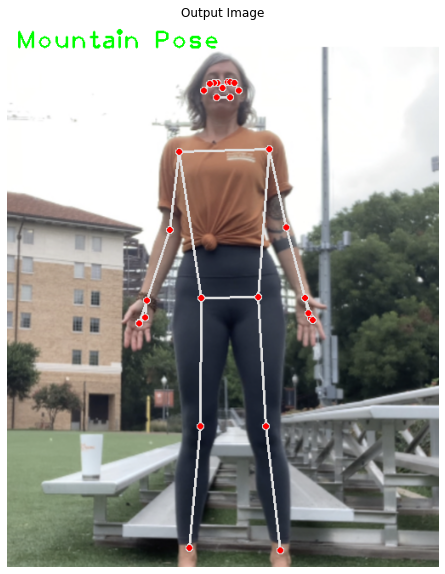
image = cv2.imread('data/tree_pose.png')
output_image, landmarks = detectPose(image, pose, display=False)
if landmarks:
classifyPose(landmarks, output_image, display=True)
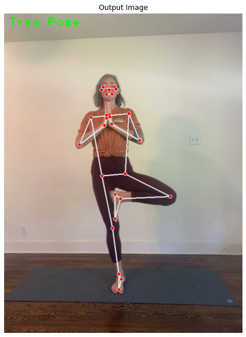
image = cv2.imread('data/warrior_1.jpeg')
output_image, landmarks = detectPose(image, pose, display=False)
if landmarks:
classifyPose(landmarks, output_image, display=True)
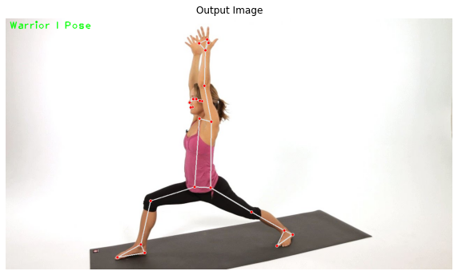
image = cv2.imread('data/warrior_2.png')
output_image, landmarks = detectPose(image, pose, display=False)
if landmarks:
classifyPose(landmarks, output_image, display=True)
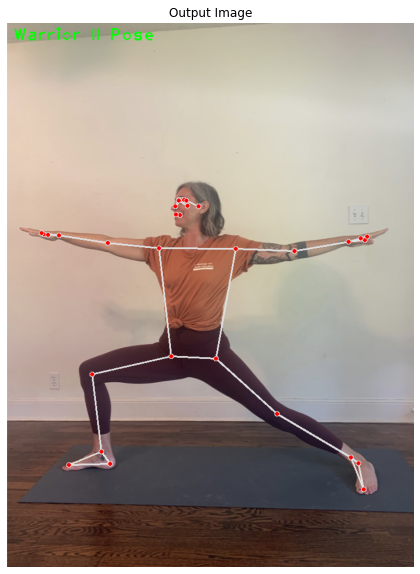
image = cv2.imread('data/triangle.jpeg')
output_image, landmarks = detectPose(image, pose, display=False)
if landmarks:
classifyPose(landmarks, output_image, display=True)
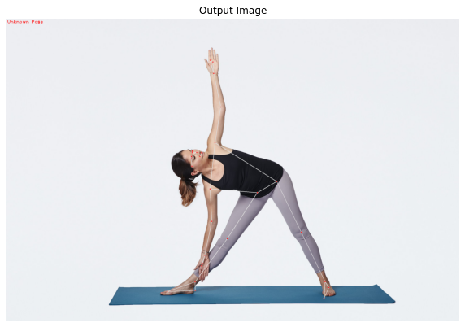
# Setup Pose function for video.
pose_video = mp_pose.Pose(static_image_mode=False, \
min_detection_confidence=0.5, \
model_complexity=1)
camera_video = cv2.VideoCapture(0)
# Initialize a resizable window.
cv2.namedWindow('Pose Classification', cv2.WINDOW_NORMAL)
# Iterate until the webcam is accessed successfully.
while camera_video.isOpened():
# Read a frame.
ok, frame = camera_video.read()
# Check if frame is not read properly.
if not ok:
# Continue to the next iteration to read the next frame and ignore the empty camera frame.
continue
# Flip the frame horizontally for natural (selfie-view) visualization.
frame = cv2.flip(frame, 1)
# Get the width and height of the frame
frame_height, frame_width, _ = frame.shape
# Resize the frame while keeping the aspect ratio.
frame = cv2.resize(frame, (int(frame_width * (640 / frame_height)), 640))
# Perform Pose landmark detection.
frame, landmarks = detectPose(frame, pose_video, display=False)
# Check if the landmarks are detected.
if landmarks:
# Perform the Pose Classification.
frame, _ = classifyPose(landmarks, frame, display=False)
# Display the frame.
cv2.imshow('Pose Classification', frame)
# Wait until a key is pressed.
# Retreive the ASCII code of the key pressed
k = cv2.waitKey(1)
# Check if 'ESC' is pressed.
if(k == 27):
# Break the loop.
# Release the VideoCapture object and close the windows.
camera_video.release()
break
cv2.destroyAllWindows()